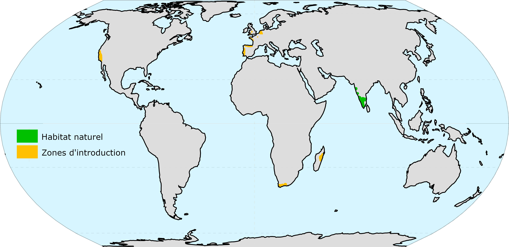

Répartition mondiale

- Carausius morosus est originaire des montagnes du sud-ouest de l'Inde, d'où son nom de phasme indien.
- Des animaux échappés ou issus d'élevages se sont implantés dans la nature. C'est le cas sur la côte ouest des États-Unis, en Afrique du Sud, à Madagascar, et dans plusieurs pays d'Europe de l'Ouest, dont la France.
- En Californie (côte ouest des États-Unis), il est considéré comme nuisible.